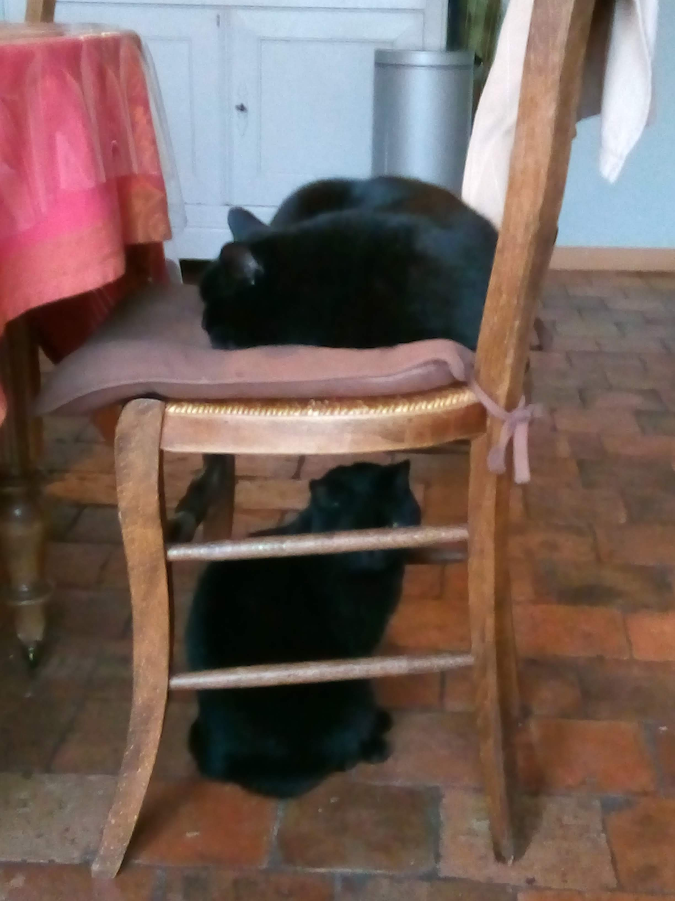

←retour à la page d'accueil
Mon Chez-moi
-
On va commencer par ma maison donc c'est une maison basique en pleine campagne, avec un grand jardin où mes poules aiment se promener.
C'est pas en ce moment qu'il est le plus beau mais dans 1 mois il sera mieux.
-
J'ai aussi deux chattes toutes noires.
À l'origine on avait que Réglisse mais mon père a un jour croisé un chaton qui lui ressemblait beaucoup.
Il a cru que c'était elle qui était montée dans la voiture sans le vouloir et l'a donc ramenée à la maison.
Voilà comment Cachou est arrivée chez nous.
Réglisse Cachou caractère: Une vrai princesse et assez caline quand elle n'a pas peur caractère: A toujours faim et se laisse très facilement caliner activités préférées: Dormir au soleil activités préférées: Chasser(même si c'est pas bien pour les oiseaux), manger

-
Enfin, je vis avec mes parents et ma petite soeur qui a 2ans de moins que moi (même si on dirait pas).
Elle s'appelle Constance et elle entre au lycée l'année prochaine.